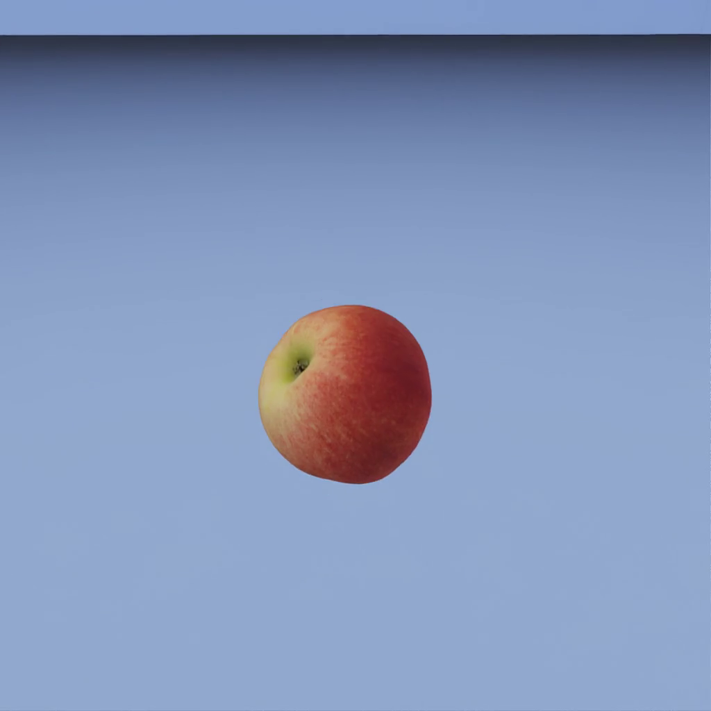

ground_drop (FET003 Physics)#
Property |
Value |
|---|---|
Test name |
ground_drop |
Feature(s) |
FET003_BASE_PHYSX |
Engine |
Kit / Isaac Sim (>=2024.2.0) |
Test version |
3.0.0 |
Summary#
Drops the asset from 8 times its height above a flat collision-enabled floor, then confirms it contacts the ground, does not penetrate the surface, and comes to rest within 8 seconds of first contact. This test covers both the drop and the settling check; there is no separate stability test.
What Pass Guarantees#
A reviewer, PM, or OEM can trust that the asset has a working collision mesh and physically reasonable mass and inertia. The asset will land on flat ground without sinking through the surface and will settle into a stable resting state rather than oscillating, jittering, or sliding indefinitely. Both the collision shape and the dynamic properties are sufficient for use in a physics simulation.
What It Checks#
The test verifies three conditions in sequence during a single simulation run.
First, ground contact: the asset must touch the floor. The bounding-box minimum Z coordinate must descend to or below the floor contact threshold, which is the floor level plus a 0.1 m tolerance, meaning the asset must come within 0.1 m of the ground surface. An asset that never descends to this level has failed to respond to gravity, indicating a missing or broken physics setup.
Second, non-penetration: after the asset touches the floor, the bounding-box minimum Z must not drop below the floor level minus the 0.1 m tolerance. Penetration is flagged immediately on the first frame where the Z minimum crosses that threshold. A separate 1-second post-contact delay controls only when rest detection can begin, preventing mid-air stillness from being mistaken for a settled resting state.
Third, settling: the asset must come to rest within 8 seconds of first ground contact. Rest is declared when both the bounding-box center position and all bounding-box corners remain stable within a 2 cm tolerance over a continuous 2-second hold window. Tracking both position and corners means that a spinning object, which has stable translation but unstable rotation, is correctly identified as not at rest.
How It Works#
The test loads the asset in a blue room with a collision-enabled ground plane. The asset is positioned at 8 times its bounding-box height above the floor (drop_height_factor = 8.0). Physics is simulated at 240 fps. A camera follows the asset throughout the fall and settling phases.
Each simulation frame, the test reads the asset bounding box and evaluates the three conditions above. The simulation exits as soon as rest is detected, plus a brief 0.5-second tail for the video. This early-exit behavior means typical runs finish well before the 10-second hard cap (simulation_seconds = 10.0).
A 120-second watchdog terminates any simulation that hangs, which prevents PhysX instabilities from blocking the pipeline indefinitely.
Before physics starts, the pre-simulation safeguards check whether the asset has UsdPhysics.RigidBodyAPI and UsdPhysics.CollisionAPI. An asset with a world-anchor (a fixed joint pinning it to the world) is reported as not applicable and skipped, with the reason recorded, because a fixed-base asset cannot fall by design.
Key thresholds from config_defaults:
drop_height_factor: 8.0 (drop height as a multiple of the asset bounding-box height)floor_margin: 0.1 m (contact and penetration tolerance)penetration_check_seconds: 1.0 s (post-contact delay before rest detection begins; penetration itself is flagged immediately)rest_tolerance: 0.02 m (maximum movement allowed during the hold window)rest_detection_hold_seconds: 2.0 s (duration both position and corners must be stable)rest_detection_max_seconds: 8.0 s (maximum time from first contact to declare rest)simulation_seconds: 10.0 s (hard upper cap)physics_fps: 240
Failure Cases#
Symptom |
Likely cause |
|---|---|
Asset never touches the ground |
|
Asset penetrates the floor after contact |
The collision mesh approximation is incorrect or normals point inward. Thin geometry less than 1 cm thick can also tunnel through the floor. |
Asset touches the floor but never settles |
Mass is unrealistic and causes excessive bouncing; the center of mass is outside the collision mesh and causes wobbling; the base geometry is rounded and never fully damps; or overlapping collision meshes generate perpetual forces. |
Physics simulation hangs (120 s watchdog) |
Self-penetrating geometry, missing or zero-volume colliders, overlapping rigid bodies, or NaN and extreme values in mass or diagonal inertia properties stall the PhysX solver. |
How to Fix#
If the asset never touches the ground, apply UsdPhysics.RigidBodyAPI to the root prim and ensure at least one mesh has UsdPhysics.CollisionAPI. Remove any FixedJoint that anchors the asset to the world. Check that mass is a positive non-zero value, because a mass of zero makes the body kinematic and prevents falling.
If the asset penetrates the floor, change the collision mesh approximation to convex hull. Verify that all collision mesh normals point outward. Remove or thicken any geometry that is thinner than 1 cm. Review the test video to identify where the penetration occurs.
If the asset settles on the ground but never comes to rest, set the mass to a value proportional to the real-world equivalent. Verify that the center of mass is inside the collision mesh boundary. If the base geometry is rounded, consider flattening the base collision mesh so the asset finds a stable resting position. Check for overlapping collision meshes. If the asset jitters, simplify the collision mesh to convex hull to reduce solver instability.
If the simulation hangs, open the asset in Kit standalone and step physics manually to surface the specific PhysX error. Check for self-penetrating geometry, missing or zero-volume colliders, and NaN or extreme values in physxRigidBody:mass and physxRigidBody:diagonalInertia.
Expected Result#

The asset starts in mid-air above a flat blue floor. It falls under gravity, hits the ground, and might bounce or tumble before coming to rest. The video covers the entire fall and settle sequence. An asset that tunnels through the floor or never settles indicates a broken collision mesh or unrealistic mass parameters.
Notes and Caveats#
The 0.1 m floor margin accounts for floating-point imprecision in collision resolution and prevents false positives from micro-jitter at the moment of contact.
The penetration_check_seconds parameter (1.0 s) controls when rest detection begins after first contact, not when penetration is checked. Penetration is checked and flagged on every frame from the moment of first contact. Any frame where the bounding-box minimum Z drops below floor minus 0.1 m is an immediate failure, regardless of whether the asset recovers on subsequent frames.
The 2 cm rest tolerance is intentionally loose to accept small residual rocking that never fully damps out, such as cylindrical-rim objects like coffee cups. If stricter settling behavior is required for a specific test configuration, tighten rest_tolerance in the per-run config.
The test tracks actual physics body bounds using ctx.get_asset_bounds() rather than the root transform. This ensures that an asset whose root prim is displaced from the physics body reports the correct contact position.
The world-anchor pre-check reports the test as not applicable and skips it, with the reason recorded, for assets with a FixedJoint pinning them to the world. These assets are correctly fixed-base by design and cannot fall.
The ground plane physics material applies a restitution of 0. This ensures that bouncing damps out rather than continuing indefinitely, which helps realistic assets settle within the 8-second window.